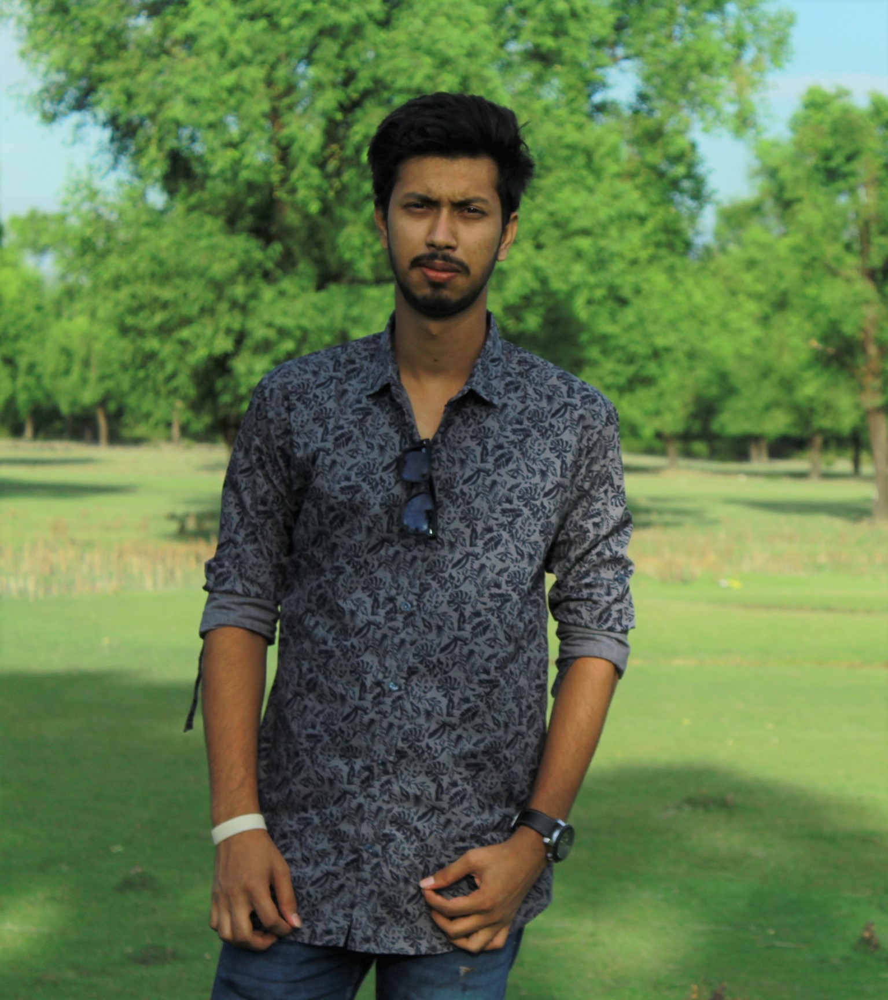

MOHAMMAD MAHABUB ALAM BHUIYAN
#21 Sukrabad, Sukrabad Road
Sher-E-Bangla Nagor, Dhaka-1215
Email: ma.nahid960@gmail.com
Mobile: +88-01834960466
PERSONAL
Fathers Name:Md . Motaher Alam Bhuiyan
Mothers Name:Mst.Nasrin Akter
Date of Birth : 30th June 1999
Marital Status : Single
Language : English , Bengali(Mother Tongue)
Permanent Address : Belashor , Chandina , Comilla
ACADEMIC QUALIFICATIONS
Bechelor of Science in Computer Science and Engineering
DEPARTMENT : Computer Science Engineering(CSE)
UNIVERSITY : Daffodil International University, Dhaka, Bangladesh
YEAR : January 2018 -present
Higher Secondary Certificate(HSC)
BOARD: Secondary and Higher Secondary Education Board, Dhaka, Bangladesh
INSTITUTION : Milestone College , Uttara , Dhaka
GROUP : Science
YEAR : 2017
RESULT : GPA 4.83
Secondary School Certificate(SSC)
BOARD : Secondary and Higher Secondary Education Board,Comilla,Bangladesh
INSTITUTION : Chandina Model Pilot High School, Chandina, Comilla
GROUP : Science
YEAR : 2015
RESULT : GPA 4.67
CAREER GOALS
To work willingly in an environment where comes through creativity, hard working , sincerity , honestly , timing and devotion to duty And became a good game developer in my future.
EXPERIENCE
SKILLS
- C Programing
- html
- photoshop in Beginer Level
- MS Word
- Power point
INTERESTS
- Reading
- Traveling
- Cyceling
- Playing